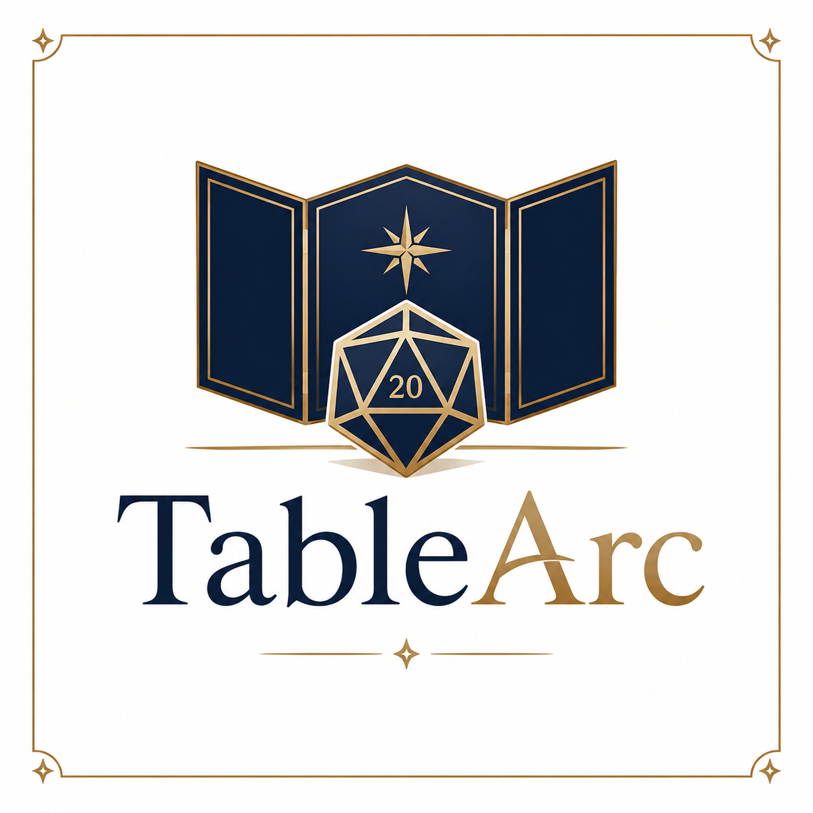

Natural-language play
Players act normally: sneak through the alley, question the witness, cast a spell, barricade a door, search the desk, flee, negotiate, or improvise.

Local-first AI tabletop engine
TableArc is built for D&D-style solo and small-table play: natural-language action, structured scenes, character authority, tactical maps, combat, rules-aware adjudication, continuity, and inspectable debug state.
What TableArc is
Most AI RPG tools can produce fantasy prose. TableArc’s goal is different: the AI can imagine, but the engine remembers, adjudicates, maps, resolves, and proves. Characters, scenes, NPCs, locations, clues, clocks, consequences, combat state, and saves are treated as persistent engine objects rather than loose text.
Players act normally: sneak through the alley, question the witness, cast a spell, barricade a door, search the desk, flee, negotiate, or improvise.
The app tracks what is true: active PC, scene state, NPC disposition, map position, resources, clocks, evidence, wounds, initiative, and aftermath.
When something breaks, TableArc should expose which layer failed: generation, parsing, validation, state commit, combat, map, provider, or narration.
D&D-style procedure
DM describes a concrete scene with usable objects, NPCs, exits, risks, and clues.
Player declares intent in plain language instead of choosing from a fixed menu.
Engine decides whether the action is automatic, impossible, uncertain, social, exploratory, spatial, or combat-related.
Rolls, saves, attacks, damage, spells, movement, resources, and clocks resolve through stateful contracts.
The world changes first. AI narration then describes the committed result and presents the next meaningful choice.
Core systems
Solo or small-table adventures with a live, responsive narrator constrained by scene state, character mechanics, and consequences.
Generate, repair, validate, and run playable modules with scenes, nodes, clocks, NPC agendas, clues, hazards, and climax structure.
The active PC governs modifiers, passives, HP, AC, attacks, spells, resources, inventory, proficiencies, and role boundaries.
Maps are not decoration. Spatial state owns positions, terrain, objects, exits, cover, visibility, reachability, and range.
Initiative, turns, movement, action economy, legal targets, attacks, saves, damage, conditions, defeat, and aftermath stay synchronized.
Rules lookup, state inspection, recaps, provider diagnostics, and debug exports help keep campaigns understandable and repairable.
Product modes
Project direction
The near-term focus is one excellent D&D-style play loop: create or import a character, generate a short playable adventure, enter a scene, show a useful map, resolve rolls and combat, track consequences, save the campaign, and export enough debug information to understand what happened.
Hardening adventure commit, active PC authority, provider errors, saves, imports, and model workflow boundaries.
Improving the DM cockpit: current situation header, scene packet view, visual clocks, pending rolls, map-first spatial actions, and cleaner debug access.
Polishing desktop packaging, local model setup, documentation, sample adventures, and guided onboarding for testers.